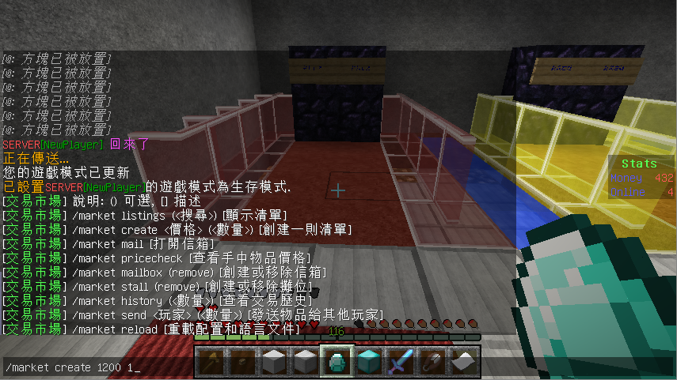
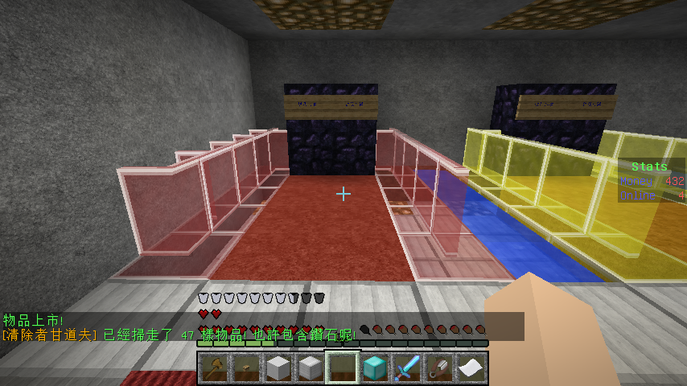
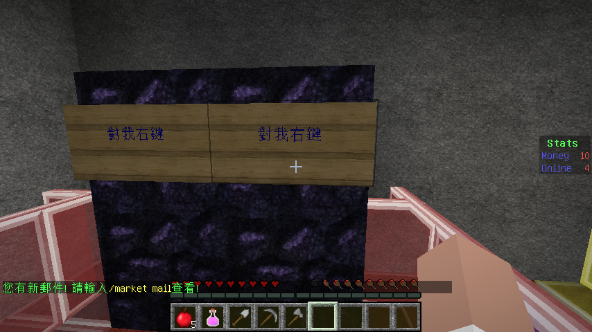
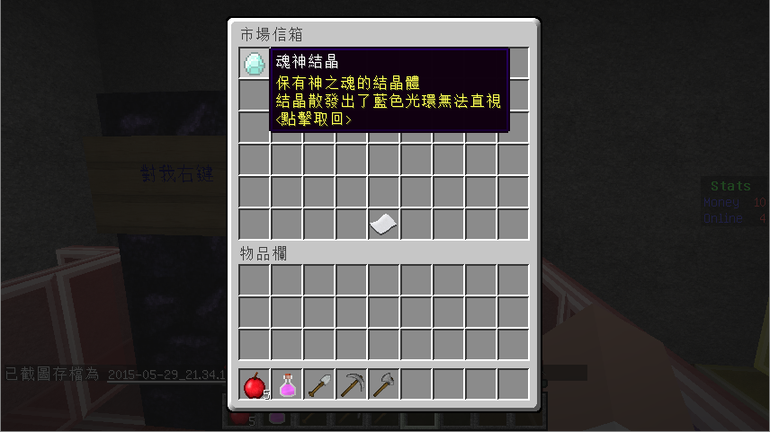

插件名稱: GlobalMarket
插件原文: 點我
玩家之間的交易系統，支持任何物品，箱子化的介面，可以直接看到物品的詳細資訊，不用再怕因為看不到物品的資訊而買
錯東西，如同遊戲商城般的介面，使交易更加方便。
主要要說的就是販賣指令 /market create (價格) (數量)

價格當然就是伺服器內的金錢, 如我圖片中使用的 /market create 1200 1 , 就是指我 販賣 手上的 這個東西 , 假如我的數量是輸
入10, 則 其他玩家的一次購買量就是10 , 而不是一次購買1個.

確認無誤之後就會看到 "物品上市" 的字樣, 之後就可以到商店中去確認, 本伺服器的設計是會在各個地方擺放如上圖的裝置, 對著左邊的告示牌按右鍵 , 就可以打開商店介面

因為能夠看到物品的詳細內容, 所以不用怕買到以假亂真的同圖示假貨, 使交易更為安全, 如果想要購買該商品, 在確認金錢數
量足夠之後, 請直接對該商品 按兩下左鍵 , 商品就會跑 到個人信箱 中了.

如果想要打開個人信箱, 對著右邊的告示牌按右鍵 , 就可以打開個人的信箱.

任何交易後的 收益或者金錢 不會直接列入玩家身上 , 都 會先進到玩家信箱 .
整理一下指令列表:
|
販賣 |
/market create ( 價格) (數量) |
|
給予 |
/market send (玩家ID) (數量) |